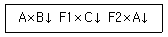

축산산업기사 (2006-05-14 기출문제)
1과목: 가축번식 육종학
1. 분만경과에서 태아만출기에 대한 설명으로 옳은 것은?
- 자궁경관이 확장되고 질이 팽창한다.
- 태아만출 후부터 태반이 만출될 때까지의 기간이다.
- 분만 경과의 3기 중 소요시강이 가장 짧은 구간으로서 양막 파열과 같은 생리적 현상 이 있다.
- 모체의 불안정.태아의 태향과 태세의 변화와 같은 생리적 변화가 있다.
(정답률: 44%)

2. 선발의 효과를 크게 하는 방법이 아닌 것은?
- 선발차를 크게 한다.
- 형질의 유전력을 높인다.
- 세대간격을 줄인다.
- 집단의 변이를 줄인다.
(정답률: 61%)
3. 한우에서 품종간교배를 실시할 때 번식용 암소 두수의 감소를 방지하는데 도움이 되는 다음의 교배법은?

- 1대잡종의 이용
- 퇴교법
- 상호역교배
- 3품종윤환교배
(정답률: 85%)
4. 정소의 하강이란 정소가 복강으로부터 내서경륜과 서경관을 거쳐 음낭까지 도달하는 과정을 말한다. 그러나 때로는 복강내장이 초상돌기를 통하여 음낭내로 침입하는 경우가 있으며.흔히 돼지에서 발생되는 현상은?
- 잠복정소
- 음낭헤르니아
- 거세
- 요도구선
(정답률: 78%)
5. 가축별로 가장 많이 사용되는 임신 진단 방법이 틀리게 연결된 것은?
- 말-우유내 프로게스트론 농도 측정
- 소-직장검사
- 돼지-초음파 검사
- 면양-NON-RETURN법
(정답률: 82%)
6. 소의 번식장애를 유발하는 전염성 질병은?
- 프리마틴
- 백색 처녀우병
- 난소낭종
- 브루세라병
(정답률: 72%)
7. ACTH나 FSH와 같이 뇌하수체 전엽에서 분비되는 호르몬이 직접 뇌하수체 전엽에 작용하여 자신의 분비 기능을 조절하는 작용은?
- positive feedback
- Negative feedback
- auto feedback
- ultra-short feedback
(정답률: 69%)
8. 종모축에서 나타나는 성성숙 현상이 아닌 것은?
- 정자 생산능력 완성
- 부생식선 발육
- 성욕의 발현과 교미∙사정가능
- 발정발현
(정답률: 64%)
9. 육우의 교잡 목적으로 틀린것은?
- 번식력.생존율 등에서 잡종강세를 이용하기 위하여
- 품종간 상보효과를 이용하기 위하여
- 강력유전현상을 이용하기 위하여
- 새로운 유전인자를 도입하여 유전적 변이를 크게 하기 위하여
(정답률: 67%)
10. 돼지를 개량하는 데에는 증체율.산자수.사료효율.도체의 품질 등 여러 가지의 경제 형질을 동시에 고려하여야 한다. 이와같이 다수의 경제 형질을 개량하기 위한 선발 방법 중에서 돼지에서 가장 많이 이용되고 있는 것은?
- 순차 선발법
- 독립 도태법
- 간접 선발법
- 선발 지수법
(정답률: 90%)
11. 어떤 종돈장에서 체장과 등지방층 두께 사이의 유전상관을 추정한 결과 -0.50이었다고 한다 체장을 중점적으로 개량하고자 한 형질에 대해서 체장이 긴 쪽으로 선발할 경우 다음 세대에서 기대되는 유전적 효과는?
- 체장은 길어지고 등지방층 두께는 두꺼워진다
- 체장은 짧아지고 등지방층 두께는 얇아진다
- 체장은 길어지고 등지방층 두께는 얇아진다
- 체장은 길어지고 등지방층 두께는 변화가 없다
(정답률: 75%)
12. 돼지의 육종목표로 바람직하지 않은것은?
- 복당산자수를 많게하고 육성율을 향상시킨다.
- 사료효율을 개선하여 사료비를 절감한다.
- 등지방두께는 두껍고 배장근 단면적은 작게 개량한다.
- 성장율이 빠르도록 개량하여 시장출하일령을 단축시킨다.
(정답률: 80%)
13. 소의 발정 징후 중에서 가장 적합하지 않은 것은?
- 거동이 불안하고 보행수가 증가한다.
- 눈이 활기 있고 신경이 예민하며 귀를 자주 흔들고 소리를 지른다.
- 외음부가 창백해지고 복부 및 유방이 팽대된다.
- 다른 암소에게 올라타거나 다른 암소가 올라타는 것을 허용한다
(정답률: 70%)
14. 돼지의 일당증체량에 대해 개체선발시 선발된 암퇘지와 수퇘지에 대한 선발차가 각각+20G및 +40G이었으며 일당증체량의 유전력이 30%이었다면.교배하여 생산된 자손에게서 기대되는 유전적 개량량은?
- 6g
- 9g
- 18g
- 30g
(정답률: 54%)
15. 젖소의 근친교배시 나타나는 증상으로 보기 어려운 것은?
- 수태당 종부 횟수의 증가
- 암소의 번식 능력 저하
- 초산 송아지의 폐사율 감소
- 비유량.유지생산량 감소
(정답률: 67%)
16. 초년도 산란수를 지배하는 요소와 관계 없는 것은?
- 동기 휴산성
- 산란 지속성
- 산란강도
- 사료 요구율
(정답률: 72%)
17. 한우의 근친교배로 인한 결과에 대한 설명으로 옳은 것은?
- 이유시 체중의저하
- 사료이용성의 개선
- 근교개수의 저하
- 12개월령 체중의 증가
(정답률: 62%)
18. 젖소의 근친교배로인하여 생산형질에 나쁜 영향을 미치지 않는 것은?
- 유량
- 유지방
- 생시체중
- 일년시 체고
(정답률: 61%)
19. 태반성 호르몬으로 LH의 작용과 비슷하여 난소를 자극하여 배란을 유도하며 황체를 형성하여 황체 세포로부터 프로게스트론의 분비를 증가시키는 역할을 하는 호르몬은?
- PMSG
- HCG
- FSH
- PGF2⍶
(정답률: 49%)
20. 난소에서 난포가 발육되는 시기는?
- 발정전기
- 발정기
- 발정후기
- 발정휴지기
(정답률: 52%)
2과목: 가축사양학
21. 단위가축에서 분비되지 않는 탄수화물 소화효소는?
- 아밀라아제
- 말타아제
- 수크라이제
- 셀룰라아제
(정답률: 59%)
22. 육성비육시 성장 형태의 3단계가 순서대로 맞는 것은?
- 골격최대성장기-근육최대성장기-지방최대축적기
- 근육최대성장기-골격최대성장기-지방최대축적기
- 지방최대축적기-근육최대성장기-골격최대성장기
- 골격최대성장기-지방최대축적기-근육최대성장기
(정답률: 77%)
23. 가축은 성장하면서 체부위별 성장 패턴이 다르다. 다음설명중 잘못된 것은?
- 골격은 생육초기에 많이 발달하고 이후에는 둔화된다.
- 지방축적은 근육 증대기 이후에 시작하여 성장완료기에 주로 많이 이루어진다
- 근육과 뼈의 비율은 가축이 성장하면서 점점 좁아진다
- 근육은 골격근의 섬유와 관련된 세포로 구성되어 있으며 성장과 가장 관계가 깊은 조직이다.
(정답률: 58%)
24. 닭의 에너지 이용과 과련된 내용으로 잘못 설명된 것은?(오류 신고가 접수된 문제입니다. 반드시 정답과 해설을 확인하시기 바랍니다.)
- 체중이 적을수록 에너지 이용효율이 높다
- 에너지 소비량이 케이지 보다 평사에 사육시 더 많다
- 산란능력이 높은 닭이 낮은 닭보다 에너지 이용효율이 높다
- 체중이 가벼운 닭은 전체 에너지 소비량이 더낮다
(정답률: 46%)
25. 다음중 칼로리.단백질 (C/P)비율이 가장 큰 사료는?
- 육계중기사료
- 산란계사료
- 산란용 초생추사료
- 산란용 대추사료
(정답률: 69%)
26. 반추동물은 4개의 위로 이루어져 있는데 이 위는 갓 태어난 송아지로부터 점차 성장하여 성우가 되면서 위의 용적이 변회된다. 갓 태어난 송아지의 위 중 가장 큰 위는?
- 제1위
- 제2위
- 제3위
- 제4위
(정답률: 80%)
27. 다음중 사료효율이 가장 좋은 경우는?
- 증체량과 사료섭취량이 비례적으로 증가하는 경우
- 증체량은 높으나 사료섭취량이 낮은 경우
- 증체량과 사료섭취량 감소하는 경우
- 증체량은 감소하나 사료섭취량이 증가하는 경우
(정답률: 74%)
28. 착유우에서 사료 급여횟수를 증가시킬 경우의 장점이 아닌것은?
- 사료섭취량증가
- 우유생산량증가
- 유지방량증가
- 완충제 요구량 증가
(정답률: 51%)
29. 동물성 단백질 사료에 관한 설명 중 옳지 않은 것은?
- 일반적으로 단백질 함량이 높고 미지성장인자가 함유되어 있다
- 일반적으로 methionine과 lysine의 함량이 높다
- 우모분.모발분과 같은 동물성 단백질은 케라틴태 단백질로서 가축에 의한 이용성이 좋다
- 어분과 육골분에는 ca과 p 등의 광물질 함량이 높다
(정답률: 44%)
30. 고기의 지방은 광택이 나는 백색 또는 크림색의 경지방이 좋으며 황색의 연지방은 좋지 않으므로 비육말기 출하 전에 사료의 선택이 매우 중요한데 다음 사료중 백색의 경지방을 생산하는 사료로만 묶여진 것은?
- 옥수수 대두박
- 보리 대두박
- 보리 밀기울
- 옥수수.밀기울
(정답률: 67%)
31. 비타민 D2를 잘 이용하지 못하는 가축은?
- 소
- 돼지
- 닭
- 면양
(정답률: 75%)
32. Van Soest에 의한 조사료의 탄수화물 분류방법에 속하지 않는 것은?
- NDS
- NDF
- ADF
- NFE
(정답률: 61%)
33. 병아리에서 비타민 E가 부족하여 발생되는 삼출성소질을 예방 또는 치료하기 위해 대체되는 무기물은?
- 셀레늄
- 몰리브덴
- 망간
- 유황
(정답률: 71%)
34. NRC 사양표준에 의하면 착유우에 급여하는 사료중에 최소한의 섬유소 공급을 추천하고 있는데 만약 조사료를 너무 적게 급여하고 농후사료를 다량 급여한 경우 일어날수 있는 현상이 아닌 것은?
- 반추위의 기능 저하로 사료 섭취량이 감소
- 우유의 유지율이 감소
- 휘발성 지방산 중 프로피온산의 생성 비율이 저하
- 장기간 급여시 각종 대사성 질병 발생
(정답률: 64%)
35. 젖소의 분만 전.후 대사적 장애를 예방하기 위한 영향적인 전략으로 적합하지 않은 것은?
- 사료의 건물 섭취량 증가
- 조사료와 농후사료의 비율 증가
- 영양소 함량 증가
- 첨가제나 이온(음,양이온)균형 자료 급여
(정답률: 48%)
36. 사료에너지의 표시방법 중 정미에너지(NE)에 대한 설명으로 올바른 것은?
- 총에너지에서 분으로 배설되는 에너지를 뺀 나머지
- 가소화에너지에서 오줌과 가스로 배출되는 에너지를 뺀 에너지
- 사료가 가지고 있는 모든 에너지
- 대사에너지에서 열량증가로 손실되는 에너지를 뺀 에너지
(정답률: 70%)
37. 가축에 단백질 사료로 유박류를 많이 사용하고 있는데 다음 중 유박류에 속하지 않는 것은?(오류 신고가 접수된 문제입니다. 반드시 정답과 해설을 확인하시기 바랍니다.)
- 대두박
- 면실박
- 아마박
- 장유박
(정답률: 62%)
38. 한우고기의 품질에 있어서 가장 크게 영향을 미치는 요인은?
- 단백질의 함량
- 무기질의 함량
- 클리코겐의 함량
- 지방의 함량
(정답률: 77%)
39. 가축에 많이 사용하고 있는 식물성 단백질사료중 유박류,제조부산물,종실 등에는 가축에 유해한 독성물질을 함유하고 있다. 다음 중 사료와 사료에 함유되어 있는 독성물질 연결이 잘못된 것은?
- 대두박 - 트립신(trypsin)
- 면실박 - 고실폴(gossypol)
- 임자박 - 고이트린 (goitrin)
- 아마박 - 청산(prussic adid)
(정답률: 59%)
40. 성장한 가축에서 주로 골연화증의 원인이 되는 비타민은?
- 비타민A
- 비타민 D
- 비타민 B1
- 비타민 E
(정답률: 69%)
3과목: 축산경영학
41. 다음 재화 중에서 자유재는 어느 것인가?
- 종자
- 공기
- 사료
- 비료
(정답률: 81%)
42. 노동능률의 향상 방안으로 합리적이지 못한 것은?
- 노동수단을 고도화한다.
- 작업방법을 표준화한다.
- 작업을 분업화한다.
- 여유노동력이 많도록한다.
(정답률: 73%)
43. 모든비용을 고정비와 변동비로 분류하고 이것을 매출액과의 관계를 분석하여 경영의 채산점을 찾는 분석기법을 무엇이라 하는가?
- 선형계획법
- 대차대조표분석
- 손익분기분석
- 안정성분석
(정답률: 54%)
44. 수 확체감형태의 생산함수를 설명한 것 중 옳은 것은?
- 어떤생산요소를 추가로 투입할수록 그에따라 얻어지는 추가생산량의 비율이 점점 감소하는 생산함수
- 한계생산량은 점차 증가하지만 절대 총생산량은 감소하는 생산함수
- 한계생산량은 점차 증가하고 절대총생산량도 증가하는 생산함수
- 어떤 생산요소를 추가로 투입할수록 그에따라 얻어지는 추가생산량의 비율이 점점 증가하는 생산함수
(정답률: 42%)
45. 양돈비육경영의 수익성 향상 방안에 해당되는 것은?
- 산자수를 많게할것
- 연간 비육회전율을 높일것
- 자돈가격을 높일것
- 연간 분만횟수를 증가시킬 것
(정답률: 77%)
46. 다음중 결합관계의 생산물이 아닌 것은?
- 우유와 젖소 송아지
- 쇠고기와 소가죽
- 오리고기와 오리털
- 닭고기와 돼지고기
(정답률: 81%)
47. 대규모 축산경영의 특징에 대한 설명으로 틀린 것은?
- 노동생산성을 향상시킬 수 있다
- 자본생산성을 향상시킨다
- 대량구입 및 투입에 따라 비용 증가를 가져온다
- 단위당 고정자산액의 감소를 가져올 수 있다
(정답률: 59%)
48. 다음 가축중 유동 자본재인 것은?
- 젖소
- 산란계
- 종돈
- 비육우
(정답률: 74%)
49. 축산경영에 있어서 경영규모의 척도와 가장 무관한 것은?
- 경지면적
- 기술수준
- 사육두수
- 경영자본
(정답률: 66%)
50. 다음 중 소득에 포함되지 않는 것은?
- 차입금이자
- 유동자본이자
- 고정자본이자
- 토지자본이자
(정답률: 57%)
51. 우리나라 축산경영에 소요되는 비용중 가장 큰 비중을 차지하는 항목은?
- 동물약품비
- 노력비
- 대농구비
- 사료비
(정답률: 79%)
52. 복합경영의 단점과 거리가 먼 것은?
- 자연적 경제적 피해가 집중될 수 있다
- 경영자의 전문적인 기술숙련이 어렵다
- 생산물의 판매에 불리하다
- 경영간에 노동의 경합이 생길수 있어서 노동생산성이 낮아지기 쉽다
(정답률: 63%)
53. 축산경영의 최종목표를 이윤의 극대화라고 할 때 이윤은 다음중 무엇에 대한 댓가인지 옳게 표현된것은?
- 자기토지에 대한 토지지대 평가액
- 가족노동에대한 보수
- 자기자본에 대한 평가이자
- 경영에 대한 댓가
(정답률: 58%)
54. 손익계산서 등식은?
- 총수익+이익=총비용
- 총비용+순이익=총수익
- 총비용-총수익=순이익
- 총수익-총비용=순손실
(정답률: 60%)
55. 축산경영에서는 토지면적보다는 가축수에 따라서 그 규모가 결정되는 것이 일반적이다. 이는 축산경영의 어떠한 특징을 설명한 것인가?
- 2차생산의 성격
- 간접적 토지성격
- 물량감소와 가치증대의 성격
- 생산물의저장 증진
(정답률: 70%)
56. 평균 생산비와 한계생산비의 관계가 잘못된 것은?
- 두 곡선은 한계 생산비의 최하점에서 교차한다
- 두 곡선은 평균 생산비의 최하점에서 교차한다
- 교차점 이전에서는 평균 생산비가 한계 생산비 보다크다
- 교차점 이후에서는 한계생산비가 평균 생산비 보다크다
(정답률: 36%)
57. 콘-호그순환(corn-hog cycle)이란 어떠한 관계에서 발생되는 것인가?
- 두 생산요소의 배합비율 변화
- 생산요소와 생산물의 가격변동
- 두 생산물의 가격변동
- 생산요소와 생산물의 생산성 변화
(정답률: 76%)
58. 축산경영의 자본진단지표가 아닌것은?
- 고정자본율
- 자기자본율
- 고정비율
- 손익분기율
(정답률: 60%)
59. 생산함수 제2영역에 대한 설명 중 옳은 것은?
- 생산요소 투입시부터 평균생산이 최고인 점까지의 범위
- 총생산이 최고인 수준이상까지의 범위
- 평균생산 및 한계생산이 증가하는 범위
- 총생산은 증가하지만 한계생산과 평균생산은 감소하는 범위
(정답률: 58%)
60. 가족노동의 특징과 가장 거리가 먼 것은?
- 시간의 제한을 받지 아니한다
- 노동 감독이 필요하지 않다
- 창의적 노동이 아니다.
- 노동보수를 지급하지 않는다
(정답률: 73%)
4과목: 사료작물학
61. 목초재배에 있어서 인산질비료에 대한 설명으로 맞는 것은?
- 결핍되면 녹색의 잎이 황색에서 갈색화가 되며 잎면에 백반이 생긴다
- 과잉흡수되면 길항작용으로 마그네슘과 칼슘이 결핍된다
- 생육초기에 결핍되면 화본과 목초의 성장이 느리거나 생육이 멈춘다
- 결핍되면 엽록소의 감소로 잎의 색깔이 녹색에서 담황색으로 변한다
(정답률: 66%)
62. 수수×수단그라스의 청예 이용시 가장 알맞은 초장은?
- 10-20CM
- 60-70CM
- 120-150CM
- 200CM이상
(정답률: 68%)
63. 고창증을 일으키지 않는 목초는?
- 알팔파
- 레드클로버
- 화이트클로버
- 버어즈풋 트레포일
(정답률: 58%)
64. 목초의 하고현상에 대한 설명으로 가장 접합한 것은?
- 하고현상의 주요인은 높은 기온 때문이다
- 하고기에는 목초의 초장을 길게 유지하는 것이 좋다
- 하고기에는 질소시비를 충분히 하여야 한다
- 병해와 하고와는 무관하다
(정답률: 66%)
65. 사료작물의 수량을 향상시키기 위하여 재배시 토양개량제로서 석회를 시용한다. 석회의 역활 또는 시용방법을 바르게 설명하고 있는 것은?
- 목초의 탄수화물 대사에 관여하며 단백질의 주요한 구성 성분이다
- 토양의 미량성분 (Mn.B.Cu.Fe)의 유효이용율을 증가시킨다
- 토양유기물을 분해하여 토양미생물의 생존을 돕는다
- 석회는 물에 쉽게 용해되므로 초지조성 바로직전에 살포하는 것이 좋다
(정답률: 63%)
66. 다음 목초 중 다발형 목초로 짝지어진 것은?
- 오차드그라스.티머시
- 캔터키 블루그라스.페레니얼 라이그라스
- 토올 페스큐.이탈리안 라이그라스
- 리드카나리그라스레드톱
(정답률: 56%)
67. 사일리지의 발효품질을 ph를 지표로 평가할 경우의 설명으로 맞는 것은?
- 사일리지ph는 주로 낙산함량이 많아지면 저하된다
- 저수분사일리지에서는 유산 생성이 낮아 ph를 발효품질의 지표로 사용할 수 있다
- 유산발효가 일어나면 암모니아태질소가 증가하여 ph가 높아진다
- 발효품질이 양호한 사일리지의 ph는 4.2 이상이다
(정답률: 50%)
68. 알팔파.레드클로버와 같은 두과 목초의 1차수확 적기는?
- 개화초기
- 출수직전
- 출수직후
- 수잉기
(정답률: 76%)
69. 장시간 일광에 조사되거나 대기 중에 방치되면 약90%이상 파괴되는 건초의 성분은?
- 카로틴
- 당질
- 단백질
- 지방
(정답률: 83%)
70. 사료작물을 예취적기에 예취하였을 경우 가용성 탄수화물이 높은 순에서 낮은 순으로 되 어 있는 것은?
- 오차드그라스>옥수수>이탈리안라이그라스
- 오차드그라스>이탈리안라이그라스>옥수수
- 옥수수>오차드그라스>알팔파
- 알팔파>옥수수>오차드그라스
(정답률: 72%)
71. 사일로(silo)설치시 비용이 가장 적게 드는 것은?
- 탑형사일로
- 기밀사일로
- 벙커사일로
- 트렌치사일로
(정답률: 66%)
72. 불경운초지에서 혼파에 대한 설명으로 가장 거리가 먼 것은?
- 불경운초지에서 혼파조합은 초종수가 많다
- 불경운초지의 혼파초종은 상번초가 중심이된다
- 불경운초지의 혼파초종은 방석형 목초가 많다
- 불경운초지의 혼파조합은 파종량이 많다
(정답률: 65%)
73. 사일리지재료의 수분함량이 70% 이하일때 사일로의 종류에 관계없이 건물 손실이 가장 적은 경우는?
- 포장에서의 손실
- 표면 부패에 의한 손실
- 발효에 의한 손실
- 삼출액에 의한 손실
(정답률: 59%)
74. 초지조성 대상자인 토양을 농경지 토양과 비교한것 중 가장 바르게 설명한 것은?
- 토양모재가 주로 화강암 또는 화강편마암이므로 중성 토양이 많다
- 알루미늄과 철이 활성화되어 인산과 결합함으로서 유효 인산 농도가 낮다
- 양이온 치환 용량과 염기포화도는 매우 높은 편이다
- 유기물이 매우 풍부하고 토심이 깊은 편이다
(정답률: 49%)
75. 적기보다 조금 일찍 수확하여 수분 함량이 다소 높은 재료로 사일리지를 담글때 올바른 대처 방법이라고 볼수 없는 것은?
- 건물함량을 올리기 위하여 예건한다
- 비트 펄프나 곡류를 첨가한다
- 충진과 답압을 잘 되게 하기 위하여 수분을 살포하고 밀봉을 잘 한다
- 밀기울이나 볏짚을 넣고 유산균을 살포한다
(정답률: 62%)
76. 화본과 사료작물에 속하는 것은?
- 베치류
- 화곡류
- 해바라기
- 유채
(정답률: 56%)
77. 사일리지의 재료로 많이 이용되는 벼과(화본과) 목초의 특성에 관한 설명중 가장 올바른 것은?
- 단백질이 풍부하고 광물질이 적다
- 탄수화물과 당분이 많으므로 사일리지의 발효가 잘된다
- 완충력(buffering Capacity)이 크기 때문에 적은 유산으로도 산도 강하가 쉽게 일어난다
- 나란히 맥으로 되어 있어 쉽게 부스러지지 않고 충진이 잘된다.
(정답률: 64%)
78. 파종용 기계와 파종방법이 올바르게 연결되어 있는 것은?
- 브로드캐스터(broadcaster)-조파
- 드릴시더(drill seeder)-산파
- 플랜터(planter)-조파
- 로타리(rotary)-산파
(정답률: 49%)
79. 사일리지의 첨가제로 유산균의 사용이 증가되고 있다 다음중 유산균 첨가제로 알맞은 것은?
- 방부제
- 요소
- 개미산액
- 당밀
(정답률: 59%)
80. 다음 화본과 목초 중에서 영년 방목지에 가장 접합한 것은?
- 티머시
- 이탈리안라이그라스
- 캔터키블르 그라스
- 스무스브롬 그라스
(정답률: 45%)